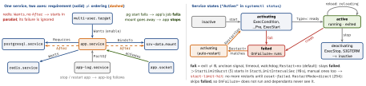

linux · folio
In one line: systemd (PID 1) turns unit files into a transaction of jobs on two
independent axes — requirement (Wants, Requires: what starts) and
ordering (After, Before: when) — and gives each service its own
cgroup to limit, log and kill all its processes.
Download PDF Print view LaTeX source


Units, and where they come from
.service · .socket · .timer (both start the same-named service) · .path (inotify) · .target (sync point) · .mount named after its path (/srv/data → srv-data.mount) · .automount · .swap · .device · .slice (cgroup inner node) · .scope (processes systemd did not fork). First match wins: /etc/systemd/system.control (set-property) → /run/systemd/transient (systemd-run) → /etc/systemd/system (admin) → /run/systemd/system → /usr/local/lib/… → /usr/lib/systemd/system (package: never edit); generators (fstab → .mount) fill /run/systemd/generator* at boot and on every daemon-reload. Drop-ins app.service.d/*.conf merge alphanumerically after the unit; foo-bar.service also reads foo-.service.d/. Linked to /dev/null: masked, never activated, not even as a dependency. # or ; comments only at the start of a line (KEY=v #x keeps “#x”); an empty assignment resets a list.
Requirement directives — in [Unit] of X
Wants= | start them too; their failure is ignored — “the recommended way” |
Requires= | + their failed start fails X only if X is After= them; their explicit stop / restart stops / restarts X |
Requisite= | must already be active, else X fails at once |
BindsTo= | + X stops when they stop for any reason; with After=, X is active only while they are |
PartOf= | their stop / restart propagates to X — one way, nothing else |
Upholds= | (249) while X is up, restart them whenever found inactive or failed |
Conflicts= | starting one stops the other |
OnFailure= | started when X enters failed · OnSuccess= (249) |
- Ordering is orthogonal: no
After=/Before=⇒ parallel; stops run in inverse order, before starts. Services getRequires+Aftersysinit.target,Afterbasic.target,Conflicts+Beforeshutdown.targetunlessDefaultDependencies=no. network.targetis “only very weakly defined”:Wants=+After=network-online.target. A cycle is broken by deleting a job, often an innocent one’s.Condition*=false skips;Assert*=fails.
Type= — when has the start finished?
simple | fork() returned — default; reports success even if binary or User= is missing |
exec | execve() succeeded — the man page’s pick for long-running services |
forking | the parent exited (legacy daemons; set PIDFile=) |
oneshot | the process exited; default without ExecStart=; may have several |
dbus | BusName= acquired |
notify | READY=1 arrived; notify-reload (253): reload = SIGHUP → RELOADING=1, READY=1 |
idle | after the other jobs, ≤5 s — console output only |
Clients need the service’s own IPC up? notify, notify-reload or dbus.
Restart= — which exits restart
Clean = exit 0, or SIGHUP, SIGINT, SIGTERM, SIGPIPE (not for oneshot). Never after systemctl stop. RestartSec= 100 ms; RestartSteps= + RestartMaxDelaySec= (254) back off exponentially; RestartRandomizedDelaySec= (262) adds jitter.
Timeouts, stopping, Exec*= lines
TimeoutStartSec / TimeoutStopSec 90 s (oneshot: no start timeout; EXTEND_TIMEOUT_USEC= buys time). WatchdogSec=: no WATCHDOG=1 in time → SIGABRT. Stop: ExecStop= → SIGTERM → TimeoutStopSec → SIGKILL. KillMode=control-group (default) signals every process in the cgroup — a nohup cmd & child dies too · mixed: TERM main, KILL the rest · process, none: discouraged, processes escape. ExecStopPost= runs even after a crash, given $SERVICE_RESULT (exit-code, signal, timeout, oom-kill …). No shell: prefixes - failure ignored · @ sets argv[0] · : no $VAR expansion · + full privileges · ! lifts only User=/Group= · | (258) via the shell. ExecCondition=: 1–254 skips, 255 fails.
systemctl, systemd-analyze
enable = the [Install] symlinks (WantedBy= → a .wants/ link) + reload, does not start (--now does) · edit writes app.service.d/override.conf and reloads (--full: a copy); a new command there needs an empty ExecStart= first — two get the unit refused · revert undoes edit, set-property, mask · cat · show -p NRestarts,Result · daemon-reload re-runs generators, rebuilds the tree. systemd-analyze blame (own start time, “might be misleading”: waiting counts) · critical-chain (@ active at, + took) · verify (unknown directives, missing binaries) · security · calendar.
sd_notify, templates, sockets
- To
$NOTIFY_SOCKET:READY=1·RELOADING=1·STOPPING=1·STATUS=·WATCHDOG=1·FDSTORE=1: fds kept across restarts (FileDescriptorStoreMax=, 0). app@.service+start app@8080⇒%i=8080.%nname ·%pprefix ·%Hhost ·%t/run·%S/var/lib·%dcredentials.%u,%h= the manager’s user:rootin a system unit, notUser=.- Sockets: fds from 3 with
LISTEN_PID,LISTEN_FDS,LISTEN_FDNAMES; bound before the service runs: start on demand, in parallel, restart without refusing clients.Accept=no(default): one service gets the listener — “preferable” for performance;yes: anapp@.serviceper connection (max 64). >20 triggers in 2 s fail the socket.
Timers instead of cron
OnCalendar= DayOfWeek Y-M-D h:m:s; daily = *-*-* 00:00:00, weekly = Mon *-*-* 00:00:00; / repeats, .. ranges, ~ from month end, zone suffix. Monotonic: OnBootSec, OnUnitActiveSec … AccuracySec= 1 min · RandomizedDelaySec= · RandomizedOffsetSec= (258, stable) · Persistent=true: a missed calendar run fires on next activation · still running when it elapses ⇒ no
second run.
The cgroup tree, resources, delegation
Services and scopes are the leaves. CPUWeight= 1–10 000 (100, or idle): a share under contention · CPUQuota=150% = 1.5 CPUs · IOWeight= · TasksMax= (15 % of the pid limit). systemctl set-property app CPUWeight=200: live and persistent (--runtime: until reboot); systemd-cgtop. Delegate=yes: systemd keeps out of the subtree (one writer per cgroup); the service moves itself into a sub-cgroup.
Sandboxing — directive by directive
ProtectSystem= | yes: /usr, boot loader dirs read-only · full: + /etc · strict: all but /dev /proc /sys |
ProtectHome= | /home /root /run/user empty · read-only · tmpfs |
PrivateTmp= | own /tmp + /var/tmp; disconnected: a fresh tmpfs |
PrivateDevices= | pseudo devices only (null, zero, random, tty) |
PrivateNetwork= | own netns, loopback only |
NoNewPrivileges= | execve ignores setuid, file caps |
SystemCallFilter= | @system-service allow-list (~ = deny); else SIGSYS kill |
DynamicUser= | (232) UID only while running; implies ProtectSystem=strict, ProtectHome=read-only, PrivateTmp, NoNewPrivileges, RestrictSUIDSGID, RemoveIPC |
StateDirectory= | /var/lib/app: created, owned, writable under strict; Cache-, Logs- … |
Also CapabilityBoundingSet= · RestrictNamespaces= · SystemCallArchitectures=native. systemd-analyze security app: exposure 0.0–10.0, high = little sandboxing. Secrets: Environment= is “exposed to unprivileged clients via D-Bus”; LoadCredential=db:path (247) → $CREDENTIALS_DIRECTORY/db: read-only, unswappable, only the unit’s UID; LoadCredentialEncrypted= (250): sealed to TPM2 and/or a host key.
User manager, transient units, images
user@1000.service=systemctl --user(~/.config/systemd/user,WantedBy=default.target); it ends with the last session unlessloginctl enable-linger: then it starts at boot and survives logout.systemd-run -p MemoryMax=1G --wait cmd: a transient service;--scope: run in the foreground bysystemd-runitself.run0is the same binary (256).systemd-sysext(248): read-only overlay of/usr+/optfrom images whoseextension-releasematchesos-release;systemd-confext(254):/etc.soft-reboot(254): userspace only — kernel,/run, sysctls stay.
journald + journalctl
Every service’s stdout / stderr, as fields (MESSAGE, PRIORITY, _PID, _SYSTEMD_UNIT). Storage= volatile (/run/log/journal) · persistent (/var/log/journal) · auto (persistent if that exists) · none; default persistent since 259, a build option. Disk: 10 % used, 15 % kept free, each ≤4 G; 10 000 messages / 30 s per service. journalctl -u app -b -1 -p err --since -1h
-g 'time.?out' -o json · -f · -k · _PID=42 · --vacuum-size=1G (archived files only).